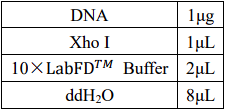
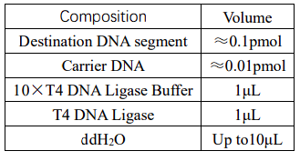

1.Bacterial strains, media, chemicals and other materials
The bacterial strains and plasmids and others used in this study are listed in Supplementary Table 1. E. coli T7-K12 was used for the construction of the original plasmid ptrc99a-araC and ptrc99a-tetR. The araC segment and tetR segment were mutated by
epPCR to construct and screen a random mutation library. E. coli bacteria were cultured in the Luria-Bertani (LB) medium for propagation. LB liquid medium was prepared by LB Broth, powder 4.8g and ampicillin 0.01 g in 0.1 liter
of pure water, while LB solid medium contained 15 g/liter of agar.
2.Expression vector construction
Analysis of the Multiple Cloning Site (MCS) of the ptrc99a segment vector sequence showed that the best double enzyme digestion sites on MCS were KpnⅠ and SaIⅠ. We used snapGene to design the araC segment and the tetR segment. Ptrc99a was incised with
KpnⅠ and SaIⅠ, and the araC segment and tetR were connected to ptrc99a with T4 ligase, respectively. The sequence of tetR, araC synthesized by Sangon Biotech (Shanghai) are shown in supplementary Table 2.Primer sequence of
tetR, araC synthesized by Sangon Biotech (Shanghai) are shown in supplementary Table 1. The detailed steps are as follows：
2.1 Enzyme digestion of araC plasmid
First, we use double digestion to cut the two plasmids containing the target segment.
Double digestion reaction system:
As the length of the araC target segment was similar to that of the remaining portion of the original plasmid (both approximately 2500bp), we used a single digestion on araC to produce two segments of 1067bp and 1500bp. This allowed for clear separation
when Rubber recovery.
Single digestion reaction system:

2.2 Enzyme digestion of tetR plasmid
2.3 Agarose gel electrophoresis
DNA segments were purifified from agarose gels by using the TIAgel Midi Purification Kit (TIANGEN, Bejing, China)
To faclitate Segment Interconnect, we use the same endonuclease to cut ptrc99a, araC and tetR
Double digestion reaction system:
2.6 The carrier is connected to the segment
Escherichia coli DNA ligase and T4 DNA ligase are the main ligases used in genetic engineering. T4 ligase can catalyze the formation of phosphodiester bond between the 5 '-P end and 3' -OH end of double-stranded DNA, and also has good ligation efficiency
for viscous end joining and end joining, it is wide application and have more users. Therefore, T4 ligase was selected for interconnection in this experiment

Overnight connection at 16℃, 3-5μL of the connection product was transformed into 100μL competent cells
Fluorescence microscope was used to observe whether the cells were successfully imported. Since there is green fluorescent protein in the arabinose promoter, it can appear green under 450-480nm blue light excitation. If green fluorescence is shown, it
is considered to be successful introduction. Therefore, arabinose was added to the culture medium of cells containing the ptrc99a plasmid and fluorescence was observed whether the color was developed.
3. protein structure prediction
The database we used contains data on the binding of thousands of protein sequences and their amino acids to DNA. Firstly, we extracted the information of amino acids from the database which contained 20 common amino acids and encoded each amino acid,
then stored the information of each amino acid in a row vector. Each amino acid vector contained the types of the top n amino acids of the extracted amino acids, the types of the last n amino acids, the types of amino acids
at the position, that position of the amino acids in the protein, the total number of amino acids in the protein, and information on the binding of amino acids at that position to DNA. Finally, we constructed a dataset containing
296610 amino acid vectors, each representing an amino acid and its information in the protein. (n=10)
3.2 Prediction and scoring calculation
After constructing the dataset, we used the first 200000 pieces as the training set and the last 100000 pieces as the prediction set. We used the random forest algorithm to calculate the relationship between DNA binding sites and other information, established
a prediction model, and evaluated the overall probability of DNA binding. Using the protein sequence to be tested for extraction and prediction, a matrix containing all amino acid vectors of the protein will be generated. The
prediction results will be filled in the last row of each column, and the DNA binding site data in the last row will be directly output to determine whether the protein has a DNA binding site. The evaluated binding probability
will be summed up and output to represent the overall binding of the protein to DNA. The dataset is listed in Supplementary Table 1
We constructed an iterative model for protein directed mutation based on the prediction of the above data in the iterationprocess (figure 2). Firstly, input the amino acid sequence of the protein to be measured, evaluated its binding site and binding
probability Pi by using a trained model, and then stored it. Randomly replaced the amino acids within the specified range of the protein and evaluated the binding probability Pi+1 after mutation. If the scores increased, the
replaced amino acid sequence and its scores would be stored and be replaced in the next round. If the scores decreased or remained , the current scores and sequence would not be stored, and the amino acid sequence before replacement
would be used for the next round of replacement. When the scores of 20 mutations did not increase, it was judged that it had reached a local optimal solution. Due to the fact that this algorithm could not specify the binding
site of DNA, in order to avoid making significant changes to the protein active site, we limited its iteration frequency to no more than 1000 times to prevent excessive deviation of the binding site
Figure 1 How to calculate the score p
Error-prone PCR takes advantage of the fact that Taq DNA polymerase does not have a 3 '→5' proofreading function, and can introduce random mutations with a high probability under certain conditions. The ptrc99a with target segment was mutated using the
Controlled Error-prone PCR Kit, and the mutated plasmid was collected and purified by agarose gel electrophoresis and gel recovery.
4.2 Agarose gel electrophoresis
The enzyme digested fragment and mutated fragments and plasmids were subjected to agarose gel electrophoresis to facilitate discrimination and extraction
Purified enzyme digested fragment, ligated fragments and plasmids. Repeated several times to increase concentration.
The error-prone PCR products were recovered from the gel, cloned and functionally screened or sequenced for single colonies, and the mutated DNA could be used as a template for the next round of error-prone PCR if needed to increase the mutation rate